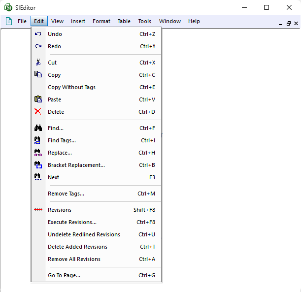

The Edit menu provides a variety of commands designed to aid in editing Sections by utilizing the commands below:
 Click the commands on the image below to see how to use each function.
Click the commands on the image below to see how to use each function.

The Edit menu provides a variety of commands designed to aid in editing Sections by utilizing the commands below:
 Click the commands on the image below to see how to use each function.
Click the commands on the image below to see how to use each function.

Users are encouraged to visit the SpecsIntact Website's Support & Help Center for access to all of our User Tools, including Web-Based Help (containing Troubleshooting, Frequently Asked Questions (FAQs), Technical Notes, and Known Problems), eLearning Modules (video tutorials), and printable Guides.
| CONTACT US: | ||
| 256.895.5505 | ||
| SpecsIntact@usace.army.mil | ||
| SpecsIntact.wbdg.org | ||